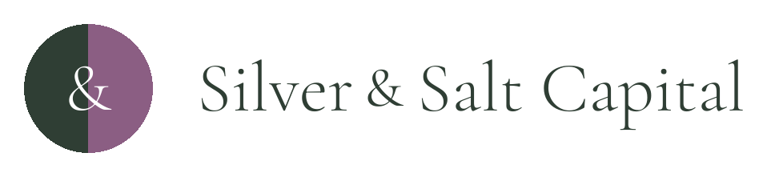
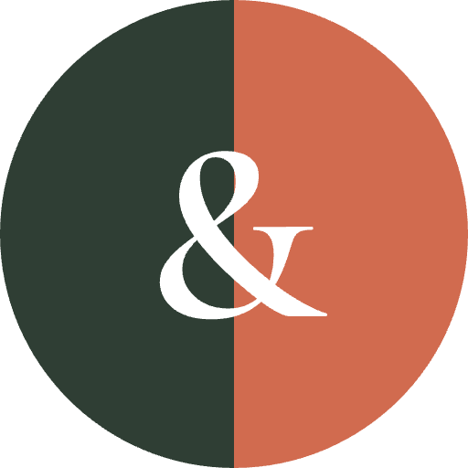
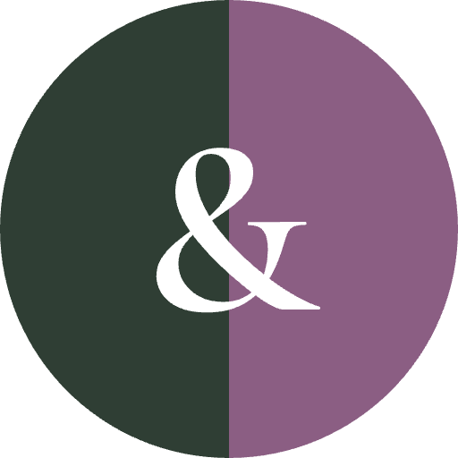

Silver & Salt Capital · Brand Book
The brand, gathered in one place.
Everything a designer, writer, or partner needs to make work that looks and sounds like Silver & Salt Capital. Logos, color, type, voice, and the rules behind them. Built to share, built to keep current.
01 · Foundations
North Star.
Before the visuals, the rules. Silver & Salt Capital is an investment collective for accredited women investors in Utah. The brand should feel like a dispatch from something already underway, not a pitch for something we hope to build.
What we are building toward
- Make the movement feel inevitable. Before she understands the model, she should feel that something important is forming in Utah and the women who get in early will shape it.
- Make the model undeniable. She controls her money. $10,000 a year, into companies she selects. Over five years, a diversified portfolio of 30+ investments. Power is in the structure, not the pitch.
- Earn trust through substance. Trust is not a section of the site. It is the texture of every sentence. Show, never tell.
- Arm her with conviction. She should leave smarter than when she arrived, able to explain this opportunity to her spouse, her advisor, her friends.
- Compel her to act now. The founding cohort is forming. Founding members don't join later.
What we will not do
- We will not plead. No "please consider," no "we need your help." The founders need capital. The investors need returns. We built the bridge.
- We will not guilt. The funding gap is real, but shame is not our tool. The reason to join is that this is a smart investment that also builds something meaningful.
- We will not hedge. No "we hope to" or "if all goes well." State what we're building. Where there's real risk, name it plainly.
- We will not sound like a nonprofit. No "giving back," no "supporting women." We deploy capital into high-performing founders for returns. The social impact is a consequence of good investing, not the other way around.
- We will not infantilize. No "girl boss." No "ladies." No pink. No diminutives. No cutesy financial metaphors.
- We will not be vague about money. Every fee disclosed. Every structure explained. Every number sourced.
- We will not oversell returns. Angel investing is high-risk. We frame this as informed risk-taking, never a sure thing.
- We will not sound like a pitch deck. No TAM, no "disrupting," no "10x." Warm, direct, grounded.
02 · Foundations
Voice & tone.
Premium, composed, precise. Goldman Sachs private wealth meets Patagonia mission clarity. Never preachy. Never apologetic. Calm cadence, full stops, quiet confidence.
Voice principles
- State facts, don't plead. The data is the argument.
- Use "we" to signal insider status, not a sales pitch.
- Short sentences for impact. Longer ones only when the complexity demands it.
- No jargon without context. No buzzwords ("synergy," "ecosystem," "empower").
- "Women founders outperform" is a market thesis, not a social statement. Frame it that way.
Punctuation: no em dashes, no en dashes
Em dashes (—) and en dashes (–) are not used in body copy, headings, template text, metadata, or UI strings. They read as improvised or breathless. Our voice is closer to Kinfolk than Bloomberg. Use commas, periods, colons, parentheses, or semicolons instead.
Hyphens in compound words are fine (women-led, high-potential, community-driven). Hyphens are lexical; dashes are punctuation. The rule targets dashes only.
Define by what it IS, never by what it isn't
Avoid "isn't X, it's Y" or "not X, but Y" constructions in product, brand, or marketing copy. Negation invites the reader to picture the thing you're denying. State what something is directly.
03 · Foundations
Brand name rules.
Non-negotiable. These rules apply everywhere the brand name appears: copy, HTML, alt text, social posts, presentations, email signatures, partner materials, contracts.
- Always use the full name: "Silver & Salt Capital." Never "Silver & Salt" alone (drops the firm's identity as a capital entity). Never "Silver and Salt Capital" (wrong character).
- Always use the ampersand character
&, never the word "and." - In HTML, wrap the ampersand in
<span class="brand-amp">&</span>so it renders in Cormorant Garamond upright, never italic. The italic ampersand is a curly script glyph that is not part of the brand identity. - The wordmark must always appear on a single line. Never split or wrap "Silver & Salt Capital" across two lines.
- The wordmark and split-circle should always appear together in horizontal marks. Never the wordmark alone.
Full name. Upright ampersand glyph. Cormorant Garamond.
Silver & Salt
Silver & Salt Capital (italic ampersand)
04 · Visual System
Logo system.
The logo pairs the split-circle icon with the wordmark. Three treatments cover every application: primary for visibility, secondary for restraint, compact for partnership marks. Two colorways: rust (default) and plum (alternate).
Primary logo
Use in navigation, hero sections, page headers, and anywhere the logo needs to hold presence against busy content. Cormorant Garamond, weight 600, 28px wordmark with 36px split-circle.
Secondary logo
Use in footers, stationery, business cards, presentation closings, and any quiet, grounded context. Cormorant Garamond, weight 300 (light), 22px wordmark with 40px split-circle. The lighter weight reads as luxury restraint.

Compact / partnership mark
Use in co-branding strips, partner postcards, event materials, or any context that needs less horizontal space than the wordmark. Layout: S [split-circle] S on one row, italic "Capital" centered below.
Split-circle icon (standalone)
Half moss, half rust (or plum), with a white upright ampersand centered. Use as a favicon, social avatar, or app icon. May appear alone only at icon scale; never substitute for the full logo in nav or hero contexts.


On dark backgrounds
On dark surfaces, the standard moss left half of the split-circle disappears. The preferred treatment is sage left / accent right (the on-dark logos above). The left half stays in the green family but provides visible contrast.
Other approved on-dark treatments: standard moss left when the background has enough contrast (e.g., ink blue), or a cream outline on the left half when refinement matters most.
05 · Visual System
Logo don'ts.
A short, strict list. These treatments are not part of the brand. They appear in early sketches and rejected variants but should not ship in any deliverable.
- Never recolor the wordmark. No rust-colored ampersand. The ampersand stays muted (moss or sage), never accent-colored.
- Never use a cream-filled or white-filled left half on dark backgrounds. Too much contrast, reads as a different logo.
- Never use the full wordmark in pure white. Breaks the warmth of the brand.
- Never italicize the ampersand in the wordmark. The Cormorant Garamond italic ampersand is a curly script form that is not the brand glyph.
- Never split the wordmark across two lines. "Silver & Salt Capital" is one line.
- Never use the wordmark without the split-circle in horizontal logo treatments.
- Never use the split-circle icon at large display sizes in place of the full logo. Icon is for favicon / avatar scale.
- Never stretch, skew, rotate, or apply effects. No drop shadows, no gradients, no outlines on the wordmark.
- Never re-render the logo in a different serif (Fraunces, Newsreader, EB Garamond). Cormorant Garamond only.
- Always maintain clear space equal to the height of the ampersand symbol around the mark.
06 · Visual System
Color palette.
A warm, grounded palette anchored in moss and cream. Pop colors carry the energy and shift by context. Use moss for primary text, cream for primary backgrounds, and one accent at a time within a given surface.
Core palette
Accent / pop palette
Each section of the site uses a different accent through the --pop token. One accent per surface. Rust is the default; ink blue, plum, lime, and teal are page-specific.
07 · Visual System
Typography.
Three families, working together. Cormorant Garamond for editorial voice. Cormorant Infant for digits only. Satoshi for the UI layer. No other fonts.
Cormorant Garamond · Display & serif
Used for hero headlines, section headings, blockquotes, the wordmark, and the tagline. Weights 300, 400, 600, 700 plus italics. Source: Google Fonts.
Satoshi · UI & body
Used for body text, navigation, labels, buttons, captions, and all UI elements. Weights 400, 500, 700, 900. Source: Fontshare.
Type scale (CSS tokens)
| Token | Size | Usage |
|---|---|---|
--text-display | 52-108px | Statement numbers, hero stats |
--text-h1 | 48-72px | Main hero titles |
--text-h2 | 36-56px | Page heroes |
--text-h3 | 28-42px | Section headings |
--text-h4 | 26-36px | Section sub-headings |
--text-h5 | 22-32px | Medium headings |
--text-h6 | 20-28px | Card titles |
--text-2xl | 17px | Primary body text |
--text-xl | 16px | Section body |
--text-lg | 15px | Body alternate |
--text-base | 13px | Body small, CTAs |
--text-sm | 11px | Nav links, small labels |
--text-xs | 10px | Eyebrow labels |
08 · Visual System
The numeral rule.
Digits 0-9 always render in Cormorant Infant, never Cormorant Garamond. This is a brand built around showing numbers (deal counts, dollar amounts, percentages, dates). Numerical clarity is non-negotiable.
Why
Cormorant Garamond's "1" is an unflagged stem. It misreads as a capital I or lowercase l. In a hero stat or a dollar amount, that ambiguity is unacceptable. Cormorant Infant is the same editorial family with a small flag on the "1" that distinguishes it cleanly. We use Infant for digits only and keep Garamond for letterforms.
How it's applied
Automatic. The override lives at the top of styles.css in section "0. NUMERAL OVERRIDE" and uses CSS unicode-range to re-source the digit code points (U+0030-0039) from Cormorant Infant. No <span class="num"> wrappers. No opt-in classes. Anywhere a designer writes font-family: 'Cormorant Garamond', digits silently render in Infant.
unicode-range override for that family, or stick to Cormorant Garamond.
09 · Visual System
Ampersand watermark.
The ampersand "&" is a signature design element used as a large-scale background watermark. Felt more than seen. A whisper, not a shout.
Example surface.
The watermark sits at 3-4% opacity, right-aligned and vertically centered. It creates brand presence without competing with content.
Specifications
| Font | Cormorant Garamond, weight 300, upright |
| Opacity | 3-4% (never higher) |
| Color | Moss on light backgrounds, cream on dark backgrounds |
| Size | 280-400px, scaled to container (should feel monumental) |
| Position | Right-aligned or right-of-center, vertically centered. Can also be centered. |
Approved uses
- Footer background, right-aligned, partially cropped by edge
- Section dividers or transition areas
- Presentation slide backgrounds
- Print materials (letterhead, report covers)
- Email signatures or headers
10 · Application
Layout & spacing.
The site uses a single horizontal padding standard and a single max-width. Per-page personality comes from palette, not layout.
Horizontal padding
| Breakpoint | Padding |
|---|---|
| Desktop (>900px) | 48px |
| Tablet (768px) | 24px |
| Mobile (480px) | 16px |
Content max-width
All main content containers use max-width: 1100px with margin: 0 auto. The .wrap class provides this. Intentionally narrower containers (for readability) may use 680px or 720px, but the parent section must still use 48px padding and full-width backgrounds.
Spacing scale
All spacing uses CSS custom properties. Section padding uses large values (80-120px vertical). Component padding uses mid-range (16-48px). Inline spacing uses small (4-12px).
| Token | Value | Token | Value |
|---|---|---|---|
--space-1 | 4px | --space-9 | 40px |
--space-2 | 8px | --space-10 | 48px |
--space-3 | 12px | --space-11 | 56px |
--space-4 | 16px | --space-12 | 64px |
--space-5 | 20px | --space-13 | 80px |
--space-6 | 24px | --space-14 | 96px |
--space-7 | 28px | --space-15 | 112px |
--space-8 | 32px | --space-16 | 120px |
Text alignment by page type
| Page | Alignment |
|---|---|
| Home | Centered hero and CTAs |
| The Thesis, How It Works, Join | Left-aligned inside .wrap |
| Standalone pages (Manifesto, Opportunity, Networks, Open Research) | Left-aligned |
| CTA sections (anywhere) | Always centered |
Border radius
| Token | Value | Usage |
|---|---|---|
--radius-sm | 4px | Buttons, badges |
--radius-md | 8px | Cards, inputs |
--radius-lg | 12px | Large cards |
--radius-full | 50% | Circles, avatars |
--radius-pill | 100px | Pill shapes |
Buttons
| Class | Style | Usage |
|---|---|---|
.btn .btn-primary | Solid --pop background | Primary CTAs |
.btn .btn-outline | Transparent, moss border | Secondary actions |
.btn .btn-ghost | Text-only with underline | Inline links |
11 · Application
Copy standards.
Consistent language across every surface. Designers and writers should adopt these phrasings verbatim where listed.
CTA language
All primary CTA buttons use "Join Us". Never "Apply Now," "Sign Up," or other variants.
Key terminology
- "Exit (return your investment) faster" — always parenthetically define "exit" for non-investor audiences on first use.
- "Accredited investor" — define on first use per SEC rules ($200K income / $1M net assets).
- Angel investing, syndicate, SPV, SAFE, IRR — defined in the Angel Investing 101 accordion on the How It Works page. Link there rather than redefining inline.
Utah Paradox framing
Preferred phrasing:
Avoid dismissive framings of the inequality ("that's not a contradiction" or similar).
Recurring lines
| Where | Copy |
|---|---|
| Home CTA strip | "We're starting now." |
| Home CTA subtext | "The first 100 members will set the thesis, shape the culture, and define what comes next." |
| Tagline (always italic, sage) | "Connecting capital to Utah founders who use it best." |
| Closing line (Home, Manifesto, Join) | "Utah's next generation of innovation will be shaped by founders & determined by funders. It's time more of them are women." |
Sources & citations
Clean and confident. No inline citation numbers. Two patterns:
- Stat cards — source name in small gray text directly on the card (e.g., "BCG / MassChallenge").
- Page-level sources section — a single "Sources & methodology" block at the bottom of each page, listing claims with their sources, plus a link to the Open Research page.
12 · Application
Brand asset files.
All downloadable brand assets live in assets/logos/brand-assets/. Transparent PNGs rendered with Cormorant Garamond. The public-facing download page is brand-assets.html.
Rust colorway
{kind=link}
{kind=link}
{kind=link}
{kind=link}
{kind=link}
{kind=link}
Plum colorway
{kind=link}
{kind=link}
{kind=link}
{kind=link}
{kind=link}
{kind=link}
assets/fonts/ (Cormorant Garamond). If you need a vector (SVG, EPS, AI) version that isn't here, reach out to Tori before substituting another format.
13 · Working With This Book
How to update this book.
This brand book is the consolidated, designer-facing source of truth. Two things to keep in mind as it evolves.
Source of truth
The brand book (brand-book.html) consolidates everything from the underlying source files into one shareable document. The source files remain authoritative for internal/developer reference:
_reference/brand-standards.md | Full canonical standards (logo specs, on-dark treatments, type, color, copy). |
_reference/brand-north-star.md | Voice principles and brand guardrails. |
_reference/copy-strategy.md | Audience, voice, key messages. |
BRAND.md | Technical standards (CSS tokens, spacing scale, breakpoints). |
CLAUDE.md | Project-level rules enforced in every Claude Code session. |
styles.css | The numeral override block (section "0. NUMERAL OVERRIDE") is load-bearing. Do not delete. |
When a brand decision changes
- Update the source file first (
brand-standards.md,brand-north-star.md, etc.). - Then update this brand book so the consolidated version matches.
- Bump the version in the cover meta block (currently 1.0) and the "Last updated" date.
- If the change affects the live site (new color, new font, new logo treatment), update
styles.cssand re-verify on a digit-heavy page likeutah-funding-2025.html.
Sharing with a contractor
Two ways:
- Send the file directly (zip
brand-book.htmlplus theassets/logos/brand-assets/folder and theassets/fonts/folder). Self-contained, no internet required for the logo previews. - Send the URL (
silverandsaltcapital.com/brand-book.htmlonce live). The page is set tonoindex, nofollowso it won't surface in search results.